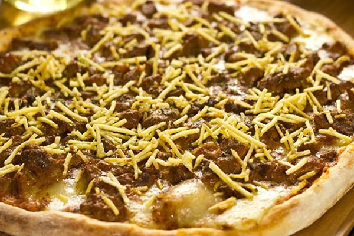

Pizzaria Comunitaria
A Pizzaria Comunitaria é um pequeno negocio destinado a comunidade, nossas comidas são de alta qualidade,destinamos o nosso trabalho a pessoas carentes e que não possuem condição financeira.
A Pizza mais classica é a de calabresa Pizza Calabresa – É especialmente preparada com recheio generoso de linguiça calabresa de primeira qualidade, queijo muçarela e orégano. A linguiça calabresa agrega um sabor único e levemente picante à pizza.:

Uma das mais favoritas ds nossos prestigiados é a classica strogonoff uma classica brasileira famosa e deliciosa, nossos clientes amam esse sabor:

Este sabor de pizza é um sabor unico e incrivel, ele é parmeggiana:
<